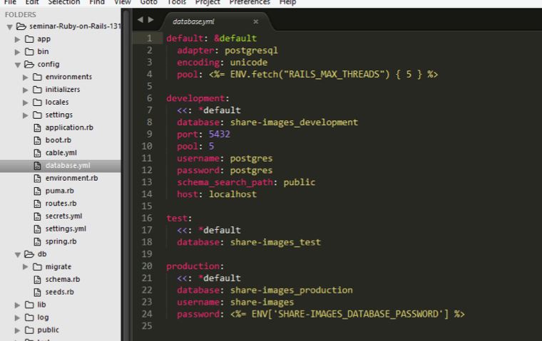
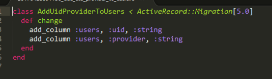
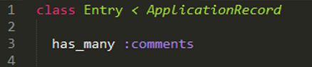
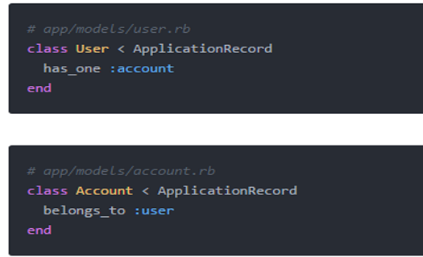
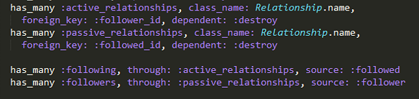
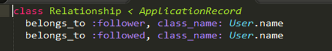

Ruby on Rails
Ruby là ngôn ngữ lập trình hướng đối tượng, được xây dựng vào năm 1995 bởi Yukihiro Matsumoto. Ruby bị ảnh hưởng bởi các ngôn ngữ khác như: Perl, Eiffel, Smalltalk, Ada, Lips. Ruby là sự kết hợp giữa lập trình hướng chức năng(fuctional programing ) và lập trình hướng thủ tục (imperative programing).
Rails là một web framework được thiết kế để làm việc bằng ngôn ngữ lập trình Ruby, được sử dụng trong việc xây dựng và phát triển các ứng dụng web, nó cũng là framework phổ biến nhất hiện nay của Ruby. Ruby on Rails(hay RoR) được thiết kế theo kiến trúc Model View Controller(MVC).
Mạng xã hội Twitter, Github, Slideshare, Redmine,...
Sử dụng:
Model: nơi dữ liệu sẽ được xử lý tùy theo chức năng của chương trình, nó được gọi là business logic. Model sẽ không làm nhiệm vụ chuyển tiếp mà sẽ trả kết quả về cho Controller.
Trong Rails, model và database kết nối thông qua định nghĩa trong file config/database.yml :
View: sẽ chịu trách nhiệm tạo ra giao diện người dùng, và giao diện này sẽ dựa trên model.View sẽ lấy dữ liệu từ model và chuyển đổi thành giao diện hiển thị lên cho người dùng. Công việc của view là chỉ có hiển thị chứ không xử lý bất kỳ thao tác nào của người dùng. Một model có thể được truy cập bởi nhiều view.
Controller: sẽ nhận các sự kiện từ bên ngoài, thông thường là từ người dùng, sau đó tương tác với model và gọi view tương ứng để hiển thị.
Để tạo một model
Để alter một bảng
Cú pháp: rails g migration [nội dung thay đổi]
Cập nhật thay đổi xuống dưới database
One-to-many (liên kết một nhiều)
Một entry có nhiều comment và 1 comment chỉ thuộc về 1 entry, 1 user.
One-to-one (liên kết một một)
Một user chỉ có 1 account và 1 account chỉ thuộc về 1 user.
Many-to-many (liên kết nhiều nhiều)
User:
Relationship:
Tạo và lưu dữ liệu:
Update:
Tìm kiếm bản ghi:
Xóa một bản ghi: